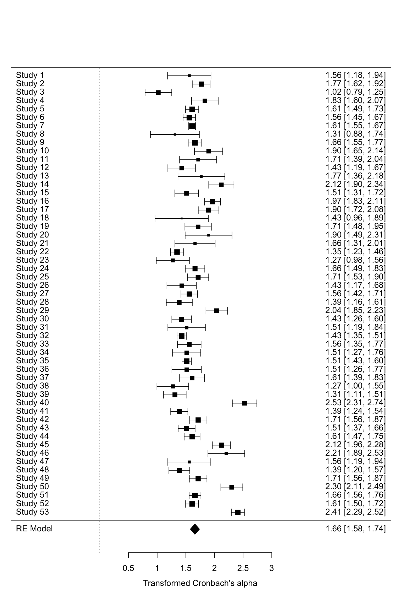
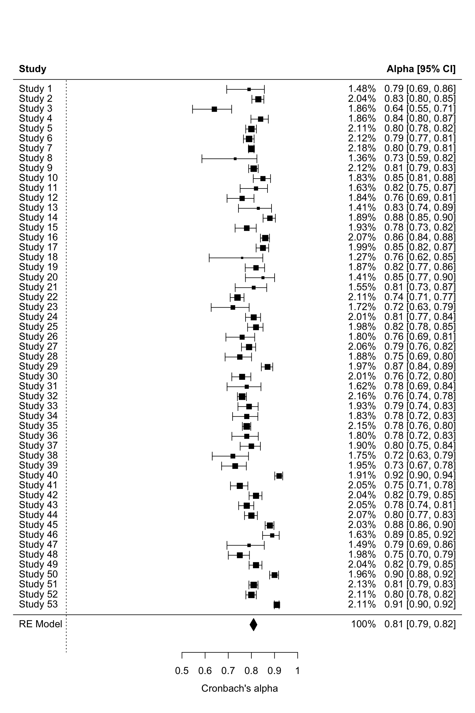
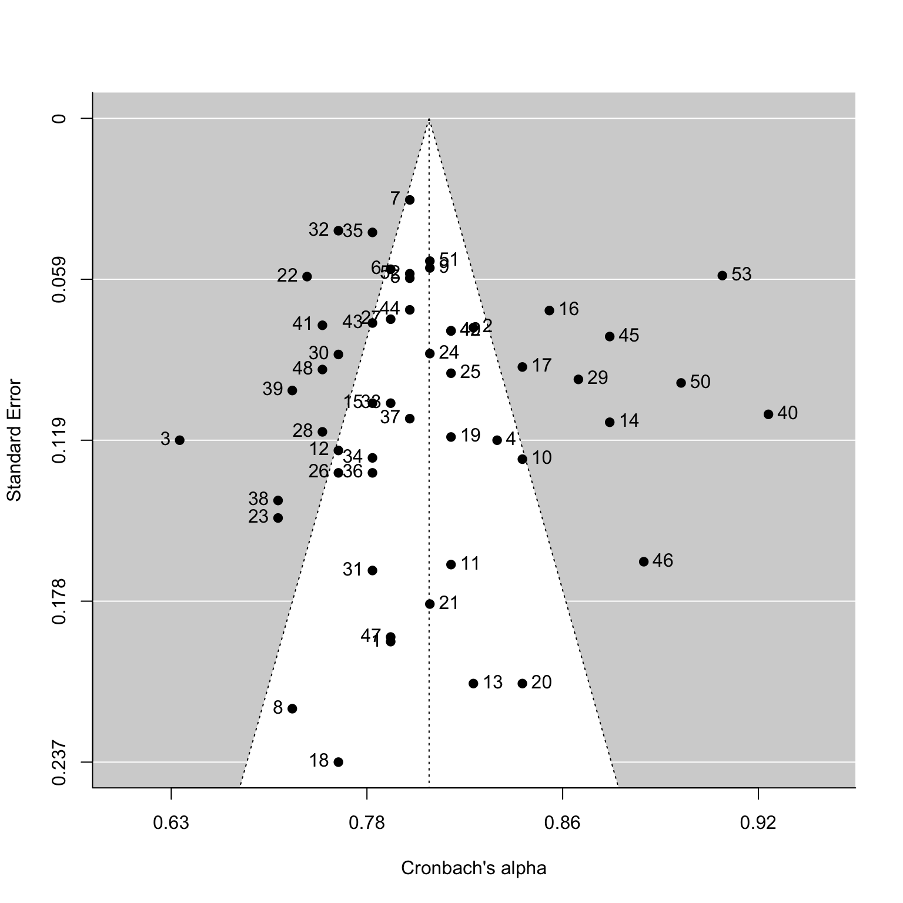

Reliability Generalization Workshop
Jiaxin Deng
2022/7/16
———- 目录 ——————————————————————————————–
———- 1. 实例分析与技术实现：R语言 ————————————————————–
———- 2. R语言基本操作——————————————————————————
———- 3.
实例操作：Deng等人(2019)冷酷无情特质问卷信度概化分析研究———————–
———-实际操作练习：使用演示数据进行练习——————————————————-
———- 4. 总结——————————————————————————————
———- 5. 学习资源分享——————————————————————————–
##1. 实例分析与技术实现：R语言 信度概化或者元分析在心理学领域的应用中，常用R语言作为主要的数据分析软件。
常用的元分析R包：metafor (Viechtbauer, 2010),
metaSEM (Cheung, 2015)等等。
具体详见Polanin等人(2017)文章，该文归纳了当前可用于元分析的R包，共63个，并对其使用功能等方面进行比较并提供使用建议。
Polanin, J. R., Hennessy, E. A., & Tanner-Smith, E. E. (2017). A Review of Meta-Analysis Packages in R. Journal of Educational and Behavioral Statistics, 42, 206–242.
其中，metafor由荷兰马斯特里赫特大学Wolfgang
Viechtbauer教授进行编写和开发，是目前应用最为广泛的程序包之一，与其他程序包相比，其基本涵盖了元分析统计分析过程，包括:计算效应值、调节分析、发表偏倚分析以及用多水平模型处理嵌套的因变量效应值等。
目前不少RG研究选用metafor包作为统计分析的工具，例如：
[1] Blázquez-Rincón, D., Durán, J. I., & Botella, J. (2022). The fear of COVID-19 scale: a reliability generalization meta-analysis. Assessment, 29, 940–948.
[2] Rubio-Aparicio, M., Núñez-Núñez, R. M., Sánchez-Meca, J., López-Pina, J. A., Marín-Martínez, F., & López-López, J. A. (2020). The Padua Inventory–Washington State University Revision of obsessions and compulsions: A reliability generalization meta-analysis. Journal of Personality Assessment, 102, 113–123.
[3] Vicent, M., Rubio-Aparicio, M., Sánchez-Meca, J., & Gonzálvez, C. (2019). A reliability generalization meta-analysis of the child and adolescent perfectionism scale. Journal of Affective Disorders, 245, 533–544.
[4] Piqueras, J. A., Martín-Vivar, M., Sandin, B., San Luis, C., & Pineda, D. (2017). The Revised Child Anxiety and Depression Scale: A systematic review and reliability generalization meta-analysis. Journal of affective disorders, 218, 153–169.
[5] López-Pina, J. A., Sánchez-Meca, J., López-López, J. A., Marín-Martínez, F., Núñez-Núñez, R. M., Rosa-Alcázar, A. I., … & Ferrer-Requena, J. (2015). The Yale–Brown obsessive compulsive scale: a reliability generalization meta-analysis. Assessment, 22, 619–628.
因此，后续的实例分析将介绍如何使用metafor程序包(Viechtbauer,
2010)进行统计分析。
##3. 实例操作：Deng等人(2019)冷酷无情特质问卷信度概化分析研究 ###简要介绍 以下将以一项对冷酷无情特质问卷(the Inventory of Callous Unemotional Traits, ICU; Frick, 2003)进行RG分析的研究作为例子(Deng et al., 2019)具体介绍如何进行一项RG研究(以统计分析的软件操作为主)。
该问卷共24题包含三个分量表，分别是淡漠(Callousness)、冷酷(Uncaring)以及无情(Unemotional)，使用李克特4级计分。
以下是具体研究过程的概要简述：
(一) 前期准备阶段
1.文献检索与筛选
本研究通过多个关键词从国内外多个数据库进行检索共下载了1,
125篇文献，然后通过筛选条件进行排除，最终共保留146篇文献。
2.信息提取与编码
（1）效应值：量表总分及其分量表Cronbach’s alpha系数
（2）纳入的调节变量，具体如下：
(a) SD of age
(b) Mean age
(c) % of males in sample
(d) sample size
(e) SD of total scores
(f) Mean of total scores
(g) administration format
(h) age group
(i) sample type
(j) language version
(k) country
(l) item number version
(二) 数据分析阶段–实操展示
本部分选取该研究中53项研究的量表总分α系数（共24题）及其个别预测变量作为演示数据进行展示。
(1)效应值:量表总分alpha系数
(2)连续变量：样本量、年龄均值和标准差、性别比例、量表总分均值和标准差
(3)类别变量：年龄类型、样本类型、是否英文版本、评定者方式
具体编码规则示例如下：
criteria %>% knitr::kable()| variable | c1 | c2 | c3 | c4 |
|---|---|---|---|---|
| agetype | Infants and young children | Children | Adolescents | Adults |
| sampletype | community | offender | NA | NA |
| language | english | non-english | NA | NA |
| ratingformat | self-report | parent-report | teacher-report | NA |
接下来展示如何使用演示数据在R语言中通过metafor包进行介绍具体分析过程。
###3.1.1 程序包的安装与运行 首先需要先安装与运行程序包，具体命令如下所示：
library(readxl)#读取与导出数据的包;#若没安装，可用install.packages("readxl")进行安装
library(openxlsx)#读取与导出数据的包;若没安装，可用install.packages("openxlsx")进行安装
options(tidyverse.quiet = TRUE)#设置tidyverse附带包及其版本信息不提示
library (tidyverse)#用于数据整理;若没安装，可用install.packages("tidyverse")进行安装
library(metafor)#主要分析所使用的R包；若没安装，可用install.packages("metafor")进行安装###3.1.2 数据读取与导入
由于所展示的例子所使用的数据并非来自程序包自带的数据集，因此需要先导入数据。
由于数据文件为excel格式，因此使用readxl程序包用于数据读取与导入。具体命令如下：
使用read_excel()函数读取数据，具体命令如下：
data<- read_excel("example_data.xlsx")#演示数据
head(data,10)#查看前10行数据## # A tibble: 10 × 13
## `study ID` agetype sampletype language ratingformat ageM ageSD gender size
## <dbl> <dbl> <dbl> <dbl> <dbl> <dbl> <dbl> <dbl> <dbl>
## 1 1 3 1 1 1 15.0 1.3 0 58
## 2 2 3 2 2 1 16.7 1.34 0.56 352
## 3 3 3 1 1 1 15.9 1.53 1 150
## 4 4 3 1 1 1 15.2 1.4 0.6 150
## 5 5 4 2 1 1 19.9 3.48 0.3 602
## 6 6 3 2 1 1 16.9 0.8 0.48 675
## 7 7 3 2 2 1 16 0.89 0.503 2306
## 8 8 2 2 2 1 10 1.19 1 46
## 9 9 4 2 1 1 21.3 4.65 0.224 687
## 10 10 3 1 1 1 15.3 1.34 0.716 134
## # ℹ 4 more variables: totalSD <dbl>, totalM <dbl>, alpha_total <dbl>, mi <dbl>#在这一数据内，包含3部分：
#(1)效应值：alpha
#(2)连续调节变量
#(3)类别调节变量###3.2 异质性检验
主要是使用rma()函数对α系数的变异性进行检验，以检验纳入分析的效应值是否存在显著的异质性。
在进行异质性检验之前，需要先计算效应值，主要是通过escalc()这个函数实现。
escalc()参数设置一般为：escalc(meansure, ai, ni, mi, dat)。
参数具体说明如下：
(1) measure用于对Cronbach’s α系数进行转换或使用原始值;
(2) ai为Cronbach’s α系数观测值;
(3) ni为样本量，mi为题目数量；
(4) dat为数据集。
例如，若打算使用不转换的形式，则将将measure设置为”ARAW”，具体命令如下：
#使用未转换方式并计算效应值alpha系数
total_es_raw<-escalc(measure = "ARAW", ai=alpha_total, ni=size, mi=mi, dat=data)
total_es_raw[1:10,]#得到最后两列的yi--效应值,vi--抽样方差;查看前10行##
## study.ID agetype sampletype language ratingformat ageM ageSD gender size
## 1 1 3 1 1 1 14.98 1.30000 0.000 58
## 2 2 3 2 2 1 16.67 1.34000 0.560 352
## 3 3 3 1 1 1 15.89 1.53000 1.000 150
## 4 4 3 1 1 1 15.20 1.40000 0.600 150
## 5 5 4 2 1 1 19.90 3.48000 0.300 602
## 6 6 3 2 1 1 16.90 0.80000 0.480 675
## 7 7 3 2 2 1 16.00 0.89000 0.503 2306
## 8 8 2 2 2 1 10.00 1.18875 1.000 46
## 9 9 4 2 1 1 21.30 4.65000 0.224 687
## 10 10 3 1 1 1 15.34 1.34000 0.716 134
## totalSD totalM alpha_total mi yi vi
## 1 9.17 23.50 0.79 24 0.7900 0.0016
## 2 9.17 24.05 0.83 24 0.8300 0.0002
## 3 7.41 28.70 0.64 24 0.6400 0.0018
## 4 6.04 46.50 0.84 24 0.8400 0.0004
## 5 7.53 41.79 0.80 24 0.8000 0.0001
## 6 7.85 21.62 0.79 24 0.7900 0.0001
## 7 8.72 23.65 0.80 24 0.8000 0.0000
## 8 7.23 20.30 0.73 24 0.7300 0.0035
## 9 6.75 37.44 0.81 24 0.8100 0.0001
## 10 10.11 41.64 0.85 24 0.8500 0.0004若打算使用Bonett(2002)公式进行转换，则将将measure设置为”ABT”，具体命令如下：
#使用Bonett(2002)的公式转换并计算加权平均alpha系数
total_es<-escalc("ABT",-ln(1-ai), ai=alpha_total, ni=size, mi=mi, dat=data)
total_es[1:10,]#得到最后两列的yi--效应值,vi--抽样方差;查看前10行##
## study.ID agetype sampletype language ratingformat ageM ageSD gender size
## 1 1 3 1 1 1 14.98 1.30000 0.000 58
## 2 2 3 2 2 1 16.67 1.34000 0.560 352
## 3 3 3 1 1 1 15.89 1.53000 1.000 150
## 4 4 3 1 1 1 15.20 1.40000 0.600 150
## 5 5 4 2 1 1 19.90 3.48000 0.300 602
## 6 6 3 2 1 1 16.90 0.80000 0.480 675
## 7 7 3 2 2 1 16.00 0.89000 0.503 2306
## 8 8 2 2 2 1 10.00 1.18875 1.000 46
## 9 9 4 2 1 1 21.30 4.65000 0.224 687
## 10 10 3 1 1 1 15.34 1.34000 0.716 134
## totalSD totalM alpha_total mi yi vi
## 1 9.17 23.50 0.79 24 1.5606 0.0373
## 2 9.17 24.05 0.83 24 1.7720 0.0060
## 3 7.41 28.70 0.64 24 1.0217 0.0141
## 4 6.04 46.50 0.84 24 1.8326 0.0141
## 5 7.53 41.79 0.80 24 1.6094 0.0035
## 6 7.85 21.62 0.79 24 1.5606 0.0031
## 7 8.72 23.65 0.80 24 1.6094 0.0009
## 8 7.23 20.30 0.73 24 1.3093 0.0474
## 9 6.75 37.44 0.81 24 1.6607 0.0030
## 10 10.11 41.64 0.85 24 1.8971 0.0158在完成计算效应值之后，使用rma()函数进行异质性检验。
#异质性检验
het1<-rma(total_es, yi, vi)
het1##
## Random-Effects Model (k = 53; tau^2 estimator: REML)
##
## tau^2 (estimated amount of total heterogeneity): 0.0782 (SE = 0.0178)
## tau (square root of estimated tau^2 value): 0.2797
## I^2 (total heterogeneity / total variability): 92.31%
## H^2 (total variability / sampling variability): 13.01
##
## Test for Heterogeneity:
## Q(df = 52) = 576.2518, p-val < .0001
##
## Model Results:
##
## estimate se zval pval ci.lb ci.ub
## 1.6587 0.0415 40.0034 <.0001 1.5775 1.7400 ***
##
## ---
## Signif. codes: 0 '***' 0.001 '**' 0.01 '*' 0.05 '.' 0.1 ' ' 1pred1=predict(het1, transf=transf.iabt)#回转换为alpha系数
pred1##
## pred ci.lb ci.ub pi.lb pi.ub
## 0.8096 0.7935 0.8245 0.6686 0.8906除此以外，还可以直接用rma()一步计算效应值和异质性检验，具体如下：
het2<-rma(measure="ABT", ai=alpha_total, ni=size, mi=mi, dat=data)#默认使用REML估计
het2##
## Random-Effects Model (k = 53; tau^2 estimator: REML)
##
## tau^2 (estimated amount of total heterogeneity): 0.0782 (SE = 0.0178)
## tau (square root of estimated tau^2 value): 0.2797
## I^2 (total heterogeneity / total variability): 92.31%
## H^2 (total variability / sampling variability): 13.01
##
## Test for Heterogeneity:
## Q(df = 52) = 576.2518, p-val < .0001
##
## Model Results:
##
## estimate se zval pval ci.lb ci.ub
## 1.6587 0.0415 40.0034 <.0001 1.5775 1.7400 ***
##
## ---
## Signif. codes: 0 '***' 0.001 '**' 0.01 '*' 0.05 '.' 0.1 ' ' 1pred2=predict(het2, transf=transf.iabt)#回转为alpha系数
pred2##
## pred ci.lb ci.ub pi.lb pi.ub
## 0.8096 0.7935 0.8245 0.6686 0.8906通过对比het1和het2，发现结果是相同的，说明上述两种任一即可。
另外，还可以通过设定method选取不同的估计方法。一般默认使用限制最大似然估计方法(Restricted
Maximum Likelihood Method;
REML)进行估计，若使用其他估计方法可以通过method=" "设定,例如method="ML"使用极大似然估计。
#method=ML
het3<-rma(total_es, yi, vi, method="ML")
het3##
## Random-Effects Model (k = 53; tau^2 estimator: ML)
##
## tau^2 (estimated amount of total heterogeneity): 0.0765 (SE = 0.0172)
## tau (square root of estimated tau^2 value): 0.2767
## I^2 (total heterogeneity / total variability): 92.16%
## H^2 (total variability / sampling variability): 12.75
##
## Test for Heterogeneity:
## Q(df = 52) = 576.2518, p-val < .0001
##
## Model Results:
##
## estimate se zval pval ci.lb ci.ub
## 1.6588 0.0411 40.3876 <.0001 1.5783 1.7393 ***
##
## ---
## Signif. codes: 0 '***' 0.001 '**' 0.01 '*' 0.05 '.' 0.1 ' ' 1pred3=predict(het3, transf=transf.iabt)#回转为alpha系数
pred3##
## pred ci.lb ci.ub pi.lb pi.ub
## 0.8096 0.7937 0.8244 0.6706 0.8900结果解读：
(1) 上图是使用随机效应模型估计的结果，读取的效应值数量为k =
53，估计方法为极大似然估计。
(2)
上述结果还报告了四个用于判断异质性的指标，分别是τ、τ2、H2和I2。其中，I2约为92%，根据判断标准属于高异质性水平。
(3) 最主要的是异质性的检验结果，结果显示Q为576.2518,
p<.0001，表明异质性检验显著，也就是这些效应值之间存在异质性。
(4)
根据上述不同估计方法的结果，发现是存在异质性的，因此有必要进一步探索造成这些α系数异质性的因素。
除了直接提取结果以外，还可在R对使用代码对结果进行整理，比较方便快捷。
—-此部分主要是基于R语言条件和循环语句等方面，不涉及信度概化分析，因此在此不进一步展开。—-
下表是异质性分析的结果。
het3_res %>% knitr::kable()| k | mean_alpha | CI.LB | CI.UB | Tau2 | Q | I2_precent |
|---|---|---|---|---|---|---|
| 53 | 0.81 | 0.79 | 0.82 | 0.077 | 576.252*** | 92.16 |
###3.3 建立森林图
使用forest.rma()函数建立森林图，从而直观看到效应值分布情况。
forest.rma(het3)#transformed alpha
结果解读：
如图所示，第一列为研究名称，中间为效应值的分布情况，最右边为各项研究对应的效应值及其置信区间结果。
除此之外，还可以根据需要设定参数，具体说明如下：
(1)
使用annotate=TRUE用于设置图中的标注，一般默认TRUE;
(2) transf用于把效应值转换。
(3) showweights用于设置是否呈现单个研究对整体效应值影响的权重。
(4) header用于判断是否设置表头呈现。
具体命令如下：
forest.rma(het3,annotate=TRUE,transf=transf.iabt,header = TRUE,showweights=TRUE)#backtransformed alpha
结果解读：
(1) 报告了基于随机效应模型所估计的平均效应值结果0.81。
(2) 这里分析得出α系数均值结果为0.81，表明内部一致性良好。
同时，可以通过pdf()对结果图进行保存，具体命令如下：
pdf("forestplot.pdf",width=10, height=20)
forest.rma(het3,annotate=TRUE,transf=transf.iabt,header = TRUE,showweights=TRUE)#backtransformed alpha
dev.off()## quartz_off_screen
## 2###3.4 调节效应分析
调节效应分析主要是通过在rma()中设定mods参数，以便分析纳入的调节变量对异质性结果的作用。
调节分析参数设置一般为：rma (total_es, yi, vi, mods = ~ moderator)。
####3.4.1 连续变量例子 以量表总分标准差作为例子呈现单个调节变量纳入进行分析的命令，具体命令如下：
res_tot_totalSD<-rma(total_es, yi, vi, mods=~totalSD,method="ML")
res_tot_totalSD##
## Mixed-Effects Model (k = 53; tau^2 estimator: ML)
##
## tau^2 (estimated amount of residual heterogeneity): 0.0521 (SE = 0.0124)
## tau (square root of estimated tau^2 value): 0.2282
## I^2 (residual heterogeneity / unaccounted variability): 88.81%
## H^2 (unaccounted variability / sampling variability): 8.94
## R^2 (amount of heterogeneity accounted for): 31.99%
##
## Test for Residual Heterogeneity:
## QE(df = 51) = 405.6720, p-val < .0001
##
## Test of Moderators (coefficient 2):
## QM(df = 1) = 20.9010, p-val < .0001
##
## Model Results:
##
## estimate se zval pval ci.lb ci.ub
## intrcpt 0.7581 0.2003 3.7851 0.0002 0.3655 1.1506 ***
## totalSD 0.1051 0.0230 4.5718 <.0001 0.0600 0.1502 ***
##
## ---
## Signif. codes: 0 '***' 0.001 '**' 0.01 '*' 0.05 '.' 0.1 ' ' 1res_tot_totalSD<-rma(measure="ABT", ai=alpha_total, ni=size, mi=mi, mods=~totalSD,dat=data,method="ML")#与上述结果相同，区别在于直接使用数据集中的变量
res_tot_totalSD##
## Mixed-Effects Model (k = 53; tau^2 estimator: ML)
##
## tau^2 (estimated amount of residual heterogeneity): 0.0521 (SE = 0.0124)
## tau (square root of estimated tau^2 value): 0.2282
## I^2 (residual heterogeneity / unaccounted variability): 88.81%
## H^2 (unaccounted variability / sampling variability): 8.94
## R^2 (amount of heterogeneity accounted for): 31.99%
##
## Test for Residual Heterogeneity:
## QE(df = 51) = 405.6720, p-val < .0001
##
## Test of Moderators (coefficient 2):
## QM(df = 1) = 20.9010, p-val < .0001
##
## Model Results:
##
## estimate se zval pval ci.lb ci.ub
## intrcpt 0.7581 0.2003 3.7851 0.0002 0.3655 1.1506 ***
## totalSD 0.1051 0.0230 4.5718 <.0001 0.0600 0.1502 ***
##
## ---
## Signif. codes: 0 '***' 0.001 '**' 0.01 '*' 0.05 '.' 0.1 ' ' 1结果解读： (1) 从图中第1行可见，该调节分析结果是基于混合效应模型来进行估计的，使用极大似然进行估计的结果。 (2) 还报告了调节变量的调节效应结果，结果显示p<.0001,表明量表总分标准差对效应值具有调节作用。
除了逐个变量进行分析后直接提取结果以外，还可在R对使用代码进行批量分析并整理结果，比较方便快捷。
—-此部分主要是基于R语言条件和循环语句等方面，不涉及信度概化分析，因此在此不进一步展开。—-
下表是连续变量纳入进行调节分析的结果。
reg_res %>% knitr::kable()| variable | k | b | t | sig.t | R2_percentage | QE |
|---|---|---|---|---|---|---|
| ageM | 53 | -0.010 | -1.160 | 0.246 | 3.57 | 518.487 *** |
| ageSD | 53 | -0.018 | -0.591 | 0.555 | 0.66 | 573.47 *** |
| gender | 53 | 0.127 | 0.934 | 0.350 | 2.10 | 563.457 *** |
| size | 53 | 0.000 | -0.310 | 0.757 | 0.34 | 563.269 *** |
| totalSD | 53 | 0.105 | 4.572 | 0.000 | 31.99 | 405.672 *** |
| totalM | 53 | 0.005 | 1.053 | 0.292 | 1.63 | 576.245 *** |
#b=回归系数beta
#t=significance test of moderator regression coefficient--zval
#sig.t=p-value
#R2%解释率####3.4.2 类别变量例子 以评定者方式作为例子呈现将类别变量纳入调节的分析，具体命令如下：
#####(1) 亚组分析(Subgroup Analysis)
sub_1=rma(total_es, yi, vi, subset = (total_es$ratingformat == 1))
predict(sub_1, transf=transf.iabt)#转换为alpha系数##
## pred ci.lb ci.ub pi.lb pi.ub
## 0.8047 0.7878 0.8202 0.6725 0.8835sub_2=rma (total_es, yi, vi, subset = (total_es$ratingformat == 2))
predict(sub_2, transf=transf.iabt)#转换为alpha系数##
## pred ci.lb ci.ub pi.lb pi.ub
## 0.8203 0.7711 0.8588 0.6757 0.9004sub_3=rma (total_es, yi, vi, subset = (total_es$ratingformat == 3))
predict(sub_3, transf=transf.iabt)#转换为alpha系数##
## pred ci.lb ci.ub pi.lb pi.ub
## 0.8717 0.7335 0.9383 0.5565 0.9629除了逐个变量进行分析后直接提取结果以外，还可在R对使用代码进行批量分析并整理结果，比较方便快捷。
—-此部分主要是基于R语言条件和循环语句等方面，不涉及信度概化分析，因此在此不进一步展开。—-
下表是亚组分析的结果。
mod_res %>% knitr::kable()| group | k | alpha | ci_95 |
|---|---|---|---|
| Infants and young children | 1 | 0.91 | [ 0.9 , 0.92 ] |
| Children | 9 | 0.80 | [ 0.74 , 0.85 ] |
| Adolescents | 34 | 0.81 | [ 0.79 , 0.83 ] |
| Adults | 9 | 0.80 | [ 0.79 , 0.81 ] |
| community | 18 | 0.82 | [ 0.79 , 0.85 ] |
| offender | 35 | 0.80 | [ 0.79 , 0.82 ] |
| english | 34 | 0.81 | [ 0.79 , 0.82 ] |
| non-english | 19 | 0.82 | [ 0.79 , 0.84 ] |
| self-report | 45 | 0.80 | [ 0.79 , 0.82 ] |
| parent-report | 6 | 0.82 | [ 0.77 , 0.86 ] |
| teacher-report | 2 | 0.87 | [ 0.73 , 0.94 ] |
#####(2) Meta-Anova
res_tot_adf<-rma(total_es, yi, vi,mods=~ratingformat,method="ML")
res_tot_adf##
## Mixed-Effects Model (k = 53; tau^2 estimator: ML)
##
## tau^2 (estimated amount of residual heterogeneity): 0.0692 (SE = 0.0158)
## tau (square root of estimated tau^2 value): 0.2630
## I^2 (residual heterogeneity / unaccounted variability): 91.30%
## H^2 (unaccounted variability / sampling variability): 11.49
## R^2 (amount of heterogeneity accounted for): 9.64%
##
## Test for Residual Heterogeneity:
## QE(df = 51) = 434.7357, p-val < .0001
##
## Test of Moderators (coefficient 2):
## QM(df = 1) = 4.2441, p-val = 0.0394
##
## Model Results:
##
## estimate se zval pval ci.lb ci.ub
## intrcpt 1.4559 0.1061 13.7171 <.0001 1.2479 1.6639 ***
## ratingformat 0.1718 0.0834 2.0601 0.0394 0.0084 0.3352 *
##
## ---
## Signif. codes: 0 '***' 0.001 '**' 0.01 '*' 0.05 '.' 0.1 ' ' 1结果解读： (1) 从图中第1行可见，该调节分析结果是基于混合效应模型来进行估计的，使用极大似然进行估计的结果。 (2) 还报告了调节变量的调节效应结果，结果显示p<.05,表明评定者方式对效应值具有调节作用。
除了逐个变量进行分析后直接提取结果以外，还可在R对使用代码进行批量分析并整理结果，比较方便快捷。
—-此部分主要是基于R语言条件和循环语句等方面，不涉及信度概化分析，因此在此不进一步展开。—-
下表是类别变量纳入进行调节分析的结果。
anv_res %>% knitr::kable()| variable | k | R2_percentage | QB | sig |
|---|---|---|---|---|
| agetype | 53 | 6.13 | 2.480 | 0.115 |
| sampletype | 53 | 2.05 | 1.026 | 0.311 |
| language | 53 | 1.02 | 0.506 | 0.477 |
| ratingformat | 53 | 9.64 | 4.244 | 0.039 |
####3.4.3 探索性模型例子 选取上述具有调节作用或解释率较高的变量纳入模型进行分析，具体命令如下：
#full model
res_multi<-rma(total_es, yi, vi, mods=~ageM+totalM+totalSD+ratingformat,method="ML")
res_multi#R2=36.79%##
## Mixed-Effects Model (k = 53; tau^2 estimator: ML)
##
## tau^2 (estimated amount of residual heterogeneity): 0.0484 (SE = 0.0116)
## tau (square root of estimated tau^2 value): 0.2200
## I^2 (residual heterogeneity / unaccounted variability): 87.70%
## H^2 (unaccounted variability / sampling variability): 8.13
## R^2 (amount of heterogeneity accounted for): 36.79%
##
## Test for Residual Heterogeneity:
## QE(df = 48) = 333.9638, p-val < .0001
##
## Test of Moderators (coefficients 2:5):
## QM(df = 4) = 25.0511, p-val < .0001
##
## Model Results:
##
## estimate se zval pval ci.lb ci.ub
## intrcpt 0.6577 0.2803 2.3468 0.0189 0.1084 1.2070 *
## ageM -0.0024 0.0087 -0.2768 0.7819 -0.0194 0.0146
## totalM 0.0040 0.0041 0.9920 0.3212 -0.0039 0.0120
## totalSD 0.0944 0.0233 4.0558 <.0001 0.0488 0.1400 ***
## ratingformat 0.0996 0.0836 1.1911 0.2336 -0.0643 0.2634
##
## ---
## Signif. codes: 0 '***' 0.001 '**' 0.01 '*' 0.05 '.' 0.1 ' ' 1###3.5 发表偏倚分析 ####3.5.1 漏斗图 漏斗图(funnel
plot)是敏感性分析的常用分析技术，能够比较直观地目测当前研究是否存在偏倚情况。
具体命令如下：
funplot1=funnel(het3,atransf=transf.iabt) #建立漏斗图
funplot2=funnel(het3,atransf=transf.iabt,label = TRUE)#设置呈现studyID标记
结果解读：
从图中可见，散点主要分布在漏斗图的顶部，向中间集中，表明不存在发表偏倚或者偏倚的可能性较低。
另外，使用剪补法对是否存在发表偏倚进行分析，具体命令如下：
tf=trimfill(het3,estimator = "R0") #使用剪补法
tf##
## Estimated number of missing studies on the right side: 0 (SE = 1.4142)
## Test of H0: no missing studies on the right side: p-val = 0.5000
##
## Random-Effects Model (k = 53; tau^2 estimator: ML)
##
## tau^2 (estimated amount of total heterogeneity): 0.0765 (SE = 0.0172)
## tau (square root of estimated tau^2 value): 0.2767
## I^2 (total heterogeneity / total variability): 92.16%
## H^2 (total variability / sampling variability): 12.75
##
## Test for Heterogeneity:
## Q(df = 52) = 576.2518, p-val < .0001
##
## Model Results:
##
## estimate se zval pval ci.lb ci.ub
## 1.6588 0.0411 40.3876 <.0001 1.5783 1.7393 ***
##
## ---
## Signif. codes: 0 '***' 0.001 '**' 0.01 '*' 0.05 '.' 0.1 ' ' 1结果解读：
通过使用剪补法进行估计，结果发现：估计右侧的缺失研究数量为0，说明不存在偏倚。
除此以外，还可以进一步分析效应值和抽样方差之间相关。若高相关，则表明漏斗图是存在不对称性的，即存在偏倚。
ranktest (total_es$yi, total_es$vi,exact=FALSE) #相关系数0.05--低相关--漏斗图是对称的--不存在偏倚或者偏倚可能性低。##
## Rank Correlation Test for Funnel Plot Asymmetry
##
## Kendall's tau = 0.0494, p = 0.6019####3.5.2 计算失效安全系数
使用fsn()函数计算失效安全系数，具体命令如下：
fail_safe=fsn(yi, vi, data=total_es,type="Rosenthal")
fail_safe##
## Fail-safe N Calculation Using the Rosenthal Approach
##
## Observed Significance Level: <.0001
## Target Significance Level: 0.05
##
## Fail-safe N: 3599835*nrow(data)+10#与5*k +10(k为纳入分析数量)所计算得出的结果进行比较## [1] 275结果解读：
(1) 图中第1行提示失效安全系数是通过”Rosenthal”方法计算所得；
(2) 图中第4行为失效安全系数–主要的报告结果;
(3) 失效安全系数用于与 5 * k +
10(k为纳入分析数量)所计算得出的结果进行比较，若失效安全系数小于所计算得出的值，那么就有可能存在发表偏倚。
(4)
图中的结果显示的失效安全系数为359983，远远高于纳入分析的数量，因此表明不存在发表偏倚。
通常来说，失效安全系数一般会与异质性结果整理在一起，具体整理如下：
het3_res %>% knitr::kable()| k | mean_alpha | CI.LB | CI.UB | Tau2 | Q | I2_precent | FSN |
|---|---|---|---|---|---|---|---|
| 53 | 0.81 | 0.79 | 0.82 | 0.077 | 576.252*** | 92.16 | 359983*** |
####3.5.3 计算Egger回归系数–Egger’s regression test
使用regtest()函数计算失效安全系数，具体命令如下：
regtest(het3, model="lm")### classical Egger test##
## Regression Test for Funnel Plot Asymmetry
##
## Model: weighted regression with multiplicative dispersion
## Predictor: standard error
##
## Test for Funnel Plot Asymmetry: t = 0.5984, df = 51, p = 0.5522
## Limit Estimate (as sei -> 0): b = 1.6015 (CI: 1.4359, 1.7672)结果解读： 从结果可得，egger回归系数截距不显著，说明不存在偏倚或者偏倚可能性较低。
####3.5.4 总结 综上，通过多方面的分析，包括漏斗图、剪补法、Rosenthal失效安全系数以及计算Egger回归系数，结果均表明此项研究不存在发表偏倚或者偏倚可能性较低。
bias %>% knitr::kable()| method | results |
|---|---|
| funnelplot | symmetrical |
| fsn | Fail-safe N: 359983 > 5*53+10=275 |
| egger | t = 0.5984, df = 51, p = 0.5522 |
####3.6 结果整理与导出
在完成所有分析之后，使用write()函数导出结果，用于论文或分析报告。
#write.xlsx (het3_res, file = "heterogeneity test results.xlsx")
#write.xlsx (reg_res, file = "continuous moderator results.xlsx")
#write.xlsx (anv_res, file = "categorical moderator results.xlsx")##4. 总结
第一，以实例使用metafor介绍了信度概化的统计分析过程，包括效应值计算、异质性检验、调节分析以及发表偏倚分析。

metafor各函数功能概览(引用自metafor-project官网)
第二，在实际研究过程中，可根据研究目的和需要自行调整使用。
Take-away messages
- 作为以信度系数作为效应值的元分析技术，信度概化既有元分析的共性，也有其特异性。
- 了解是否存在“信度引入”的问题。
- 综合判断某项测验工具是否稳定可靠。
metafor为信度概化统计分析的实现提供更多选择。
- 根据实际需要选择合适的分析方法。
##5. 学习资源分享 #####a. CRAN R包 documentation 由于开发者会对R包进行更新，具体语句以对应版本的手册说明为准。
help(metafor)#查阅手册
?metafor
?escalc()
#escalc#以escalc()为例，查看源代码，了解底层逻辑#####b. metafor官网
此处列举两个有用的网站，该网站提供了丰富的学习资源，以供参考。
metafor@github
metafor-project官网
#####c. 参考书籍 Harrer, M., Cuijpers, P., Furukawa, T. A., & Ebert, D. D. (2021). Doing meta-analysis with R: A hands-on guide. Chapman and Hall/CRC.
Polanin, J. R., Hennessy, E. A., & Tanner-Smith, E. E. (2017). A Review of Meta-Analysis Packages in R. Journal of Educational and Behavioral Statistics, 42, 206–242.
Viechtbauer, W. (2010). Conducting meta-analyses in R with the metafor package. Journal of Statistical Software, 36, 1–48.